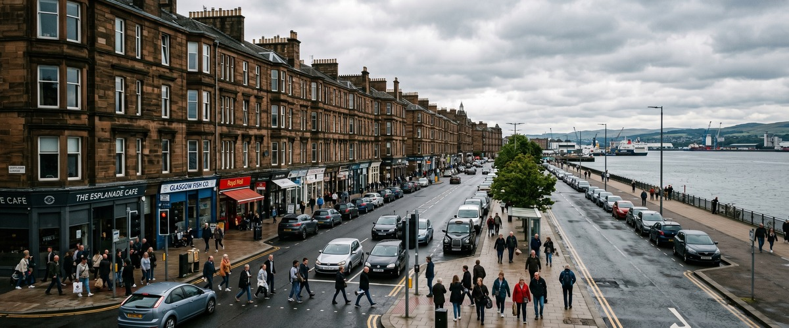
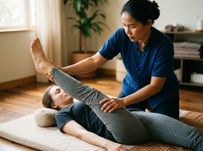
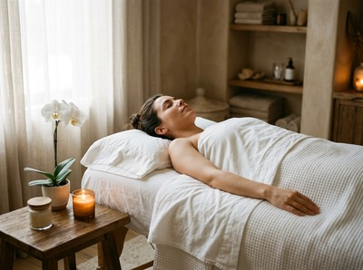

Greenock Esplanade is one of Inverclyde's most distinctive stretches of riverside living, a wide, sweeping promenade that has attracted residents and visitors since its official opening in July 1867.

Those who live along or near the Esplanade tend to be settled, community-minded people who value the area's blend of maritime history, open water views, and close proximity to Greenock town centre. Thai massage in Greenock Esplanade is easy to access, with Thai Massage Greenock located just a short journey along South Street.
The Esplanade sits in the western part of Greenock, close to Fort Matilda and Battery Park, and its residents are well placed to reach South Street without the need to travel far. Whether you walk, take the bus, or hop on the train at Fort Matilda station, the journey into the town centre is straightforward. Thai Massage Greenock on South Street is well within reach for anyone based along the waterfront.

Life along the Esplanade can be deceptively demanding. The combination of sea air walks, physical activity at the Royal West of Scotland Amateur Boat Club, and the everyday pressures of work and home life means that bodies here carry genuine tension. Regular massage is one of the most practical things you can do to stay ahead of that. You can book your session online and choose a time that fits around your routine.
At Thai Massage Greenock, Jariya Malone offers a full range of authentic Thai treatments, each tailored to what your body actually needs on the day.
The nearest train station to Greenock Esplanade is Fort Matilda, which is served by ScotRail. From Fort Matilda station, South Street is a short journey into the town centre by bus or taxi. Bus routes including the 507 and 547 serve the Fort Matilda area, connecting the western end of Greenock with the town centre where Thai Massage Greenock is located.
If you prefer to walk, the Esplanade itself stretches just over a mile, and from the eastern end near Ocean Terminal you are already close to the centre of Greenock. South Street is within comfortable walking distance from that point. There is also good local parking for anyone travelling by car along the A8 coastal route.
Thai Massage Greenock is a one-therapist practice. Jariya personally delivers every treatment and keeps detailed notes on each client, building on previous sessions rather than starting from scratch each time. That level of personalised care is what brings people back from across Inverclyde, including from the Esplanade and the Fort Matilda area.

Jariya trained at Bangkok's Wat Po temple, the institution widely regarded as the birthplace of traditional Thai massage. That training is the foundation of every treatment at Thai Massage Greenock, and it shows in the results. Book a session to experience it for yourself.
Built using spoil from the excavation of Albert Harbour, the Esplanade was opened in 1867 at a time when around 1,400 ships called Greenock their home port. The area looks out over the upper Firth of Clyde toward the anchorage known as the Tail of the Bank, a stretch of deep water that has served large vessels for centuries. You can read more about the area's maritime heritage at Tail of the Bank on Wikipedia.
Thai Massage Greenock is located at 0/2 16 South Street in Greenock town centre, which is a short distance from the Esplanade. From the eastern end of the Esplanade near Ocean Terminal, South Street is within comfortable walking distance. From the Fort Matilda end, a quick bus or taxi ride along the A8 will get you there in minutes.
The nearest train station is Fort Matilda, served by ScotRail, which connects the western Esplanade area to the wider Greenock town centre. Bus routes 507 and 547 serve the Fort Matilda area. The Esplanade also runs along the A8, making it easy to travel by car, with parking available near South Street.
Same-day availability depends on the current schedule, but it is worth checking. The quickest way to find out is to use the online booking form or call the studio directly on 01475 600868. Booking ahead by a day or two is always recommended to secure your preferred time.
For people who are physically active, Thai Sports Massage is an excellent choice. It targets the muscles used most during walking, running, and recreational activity, supporting recovery and reducing the risk of strain. Traditional Thai Massage is also highly effective, combining assisted stretching with acupressure to restore flexibility and ease tension built up through regular movement.
Thai Massage Greenock offers flexible appointment times to suit working and active lifestyles. For current availability and to confirm hours, visit the booking page or call 01475 600868. Evening and weekend appointments may be available depending on demand.